ночью возле гатэля
Если выйти ночью из гатэля и задрать голову вверх, зрелище предстаёт примерно такое:
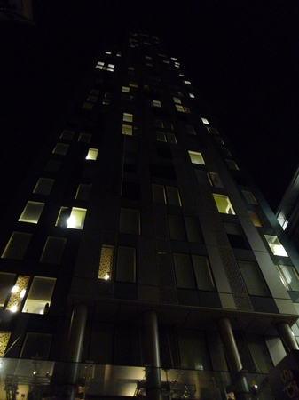
Вот как буржуи живут. На самом деле наша хата расположена в примыкающей кирпичной пристройке. (Пристройка, правда, не менее буржуйская, но ладно.)
А сам вход — вот он:
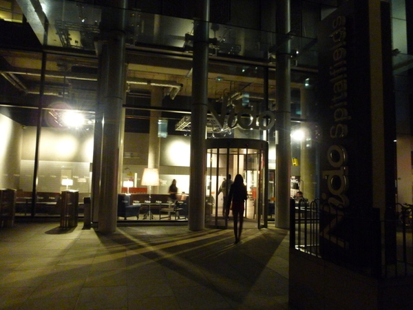
На фотке видно, как типичный обитатель гатэля направляется ко входу с надписью “Nido”. А ещё виден мемориальный столб “Nido Spitalfields”, обнесённый суровейшим забором (справа).
Как ни странно, это студенческий гатэль, и живут тут действительно студенты. Каждый день слышно, как за стенкой кто-то практикуется на виолончели. Как студенты могут позволить себе такое — не знаю. :)
Слегка поворачиваю фотик вправо, не упуская из виду мемориальный столб. В нижнем этаже расположено сомнительное заведение “Fitness First”, радующее глаз слоганом “Eat. Sleep. Train. Repeat”. Возле него стойка для великов (они тут повсюду, и обычно забиты).
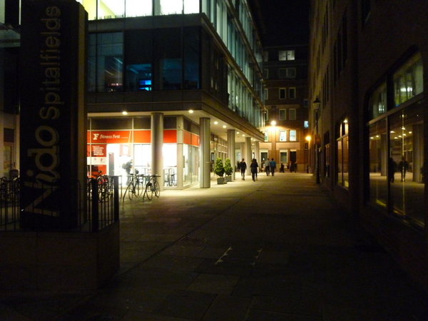
Дальше, примерно там, где на фотке люди, начинается пиццерия. Из неё всегда пахнет горелыми лепёшками.
Теперь поворачиваю фотик налево от входа. Там здорово темнее (кафеха с птицей — “The Hummingbird Bakery” — уже закрылась). Растут несколько деревьев.
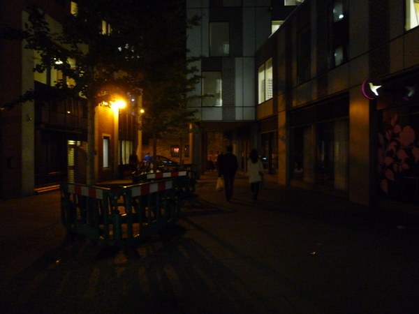
Вот и вся улица. :D Кстати, улица называется “Frying Pan Alley”.
Пройдя мимо закрытой кафэхи, приближаюсь к перпендикулярной улице.
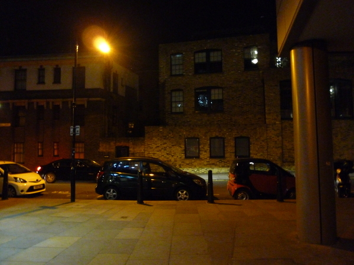
Улица слева: вдалеке плохоразличимая толпа людей. По правой стороне улицы, как смутное марево, плывёт ещё одна толпа.
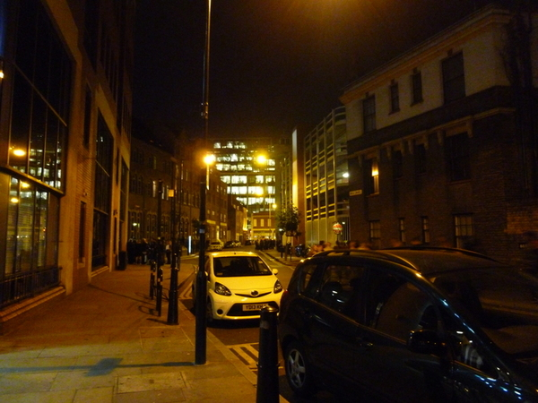
Улица справа: мотоциклист и люди, выходящие из магаза за углом.
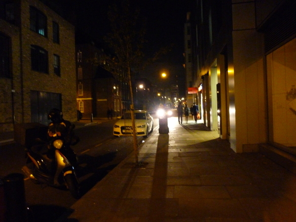
Иду назад в гатэль.
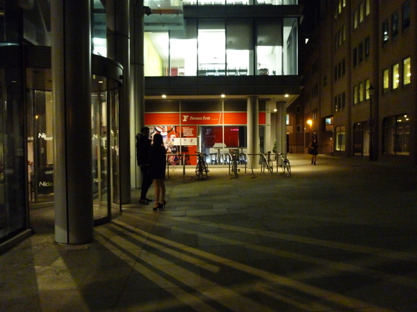
Прохожу через предбанник (он большой, занимает весь первый этаж). В дальнем конце предбанника есть служебного вида дверь, туда-то мне и надо. Уже возле самой двери разворачиваюсь и как бы невзначай делаю фотку:
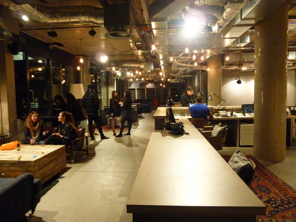
За дверью — приятнейшая картина. Это временный вход в нашу хату: пока основной вход чинят, мы входим через это “Nido”, а так, вообще, мы к нему не относимся.
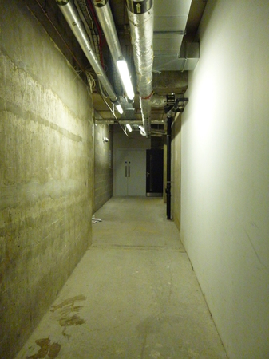
Ещё через пару дверей выхожу к лестнице и лифту. За столом под лестницей днём сидит Лукас Дракопулус — наш квартирный агент (очень бытрый и хороший).
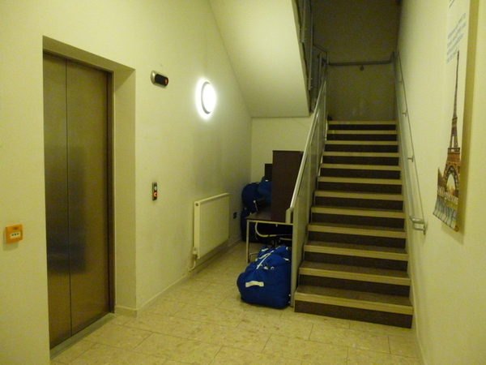
А вот, собственно, такой у меня вид.
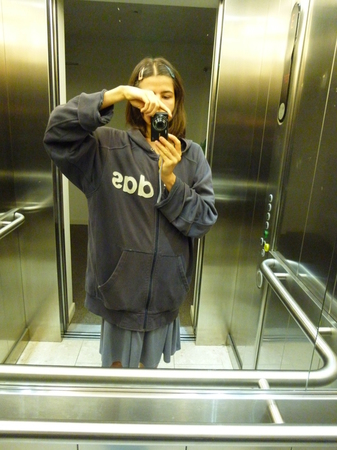
comments powered by Disqus